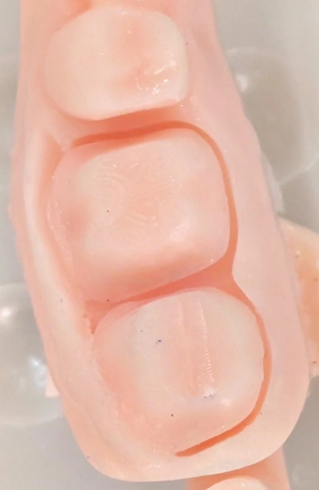

🟦 Insight 29 —راهکار سمان کردن برای مدیریت کانتکت بین روکشهای شش و هفت

📝 توضیح بالینی
در فرایند ترمیم با روکش در ناحیه دندان هفت حفظ کانتکت مناسب از اهمیت ویژهای برخوردار است.
- با توجه به نیروهای وارد شده و اکلوژن، گاهی احتمال باز شدن کانتکت بین روکش هفت و دندان ۶ وجود دارد
- در مورد این مساله مفصل در یکی از اپیزودهای میانی دنتکست صحبت کردیم که با سرچ کردن واژه ی «کانتکت» در قسمت جستجوی سایت پیدا میکنیدش.
- حالا گاهی روکش ۶ و ۷ همزمان ساخته شدن
برای مدیریت بهتر عوارض احتمالی روش سمان کردن به صورت زیر پیشنهاد میشه:
- در این روش سمان کردن به صورت مرحلهای انجام میشود. ابتدا روکش هفت با سمان دائمی و روکش دندان ۶ با سمان موقت به بیمار تحویل داده میشود و روند برای مدتی مثلا یکماه مورد ارزیابی قرار میگیرد.
در صورت عدم وجود باز شدن کانتکت در طول دوره آزمایشی، روکش دندان ۶ به صورت دائمی سمان میشود.
اما در صورت بروز مشکل، اصلاح کراون دندان شش انجام میگردد تا از عدم وجود مشکل و یا بازشدگی کانتکت اطمینان حاصل شود.
دلیل انتخاب این روش مبتنی بر ویژگیهای ساختاری دندانها است. معمولاً تاج دندان هفت از لحاظ طول، کوتاهتر از تاج دندان شش است و در صورت استفاده با سمان موقت، احتمال دباند شدن و افتادن آن بیشتر خواهد بود،ضمن اینکه با موقت بودن سمان روکش ۶، روی دو کانتکت کنترل داریم و
به این ترتیب نیازی نیست هر دو روکش سمان موقت باشند
این رویکرد با هدف بهینهسازی و تسهیل درمان بیمار و کنترل موثر تر مشکلات آتی هست
✍️ دکتر فواد شهابیان
متخصص پروتزهای دندانی و ایمپلنت